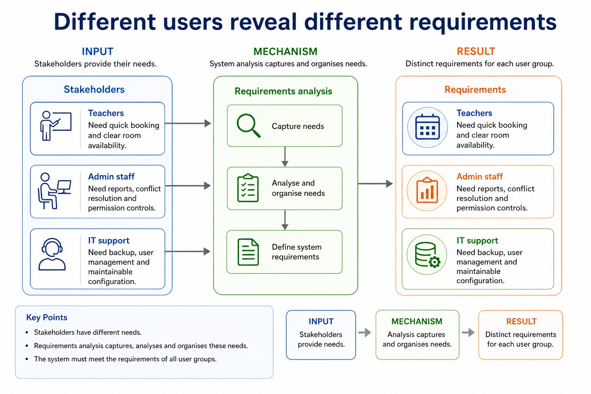
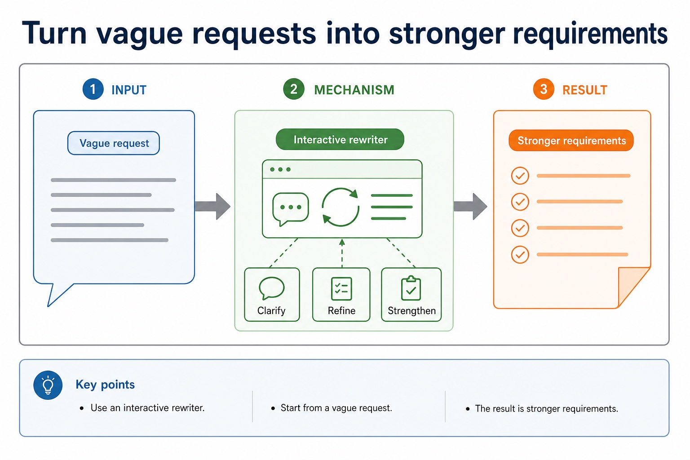
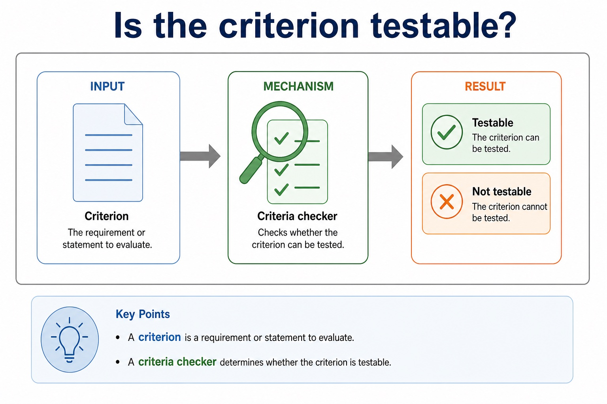

“User-friendly” is a wish. A success criterion is something you can test.
Requirements analysis finds out what a system must do and how success will be judged. Strong requirements are
clear, measurable and linked to users. Weak requirements sound pleasant but cannot be tested. Chinese support:
requirement 需求, stakeholder 利益相关者, success criteria 成功标准, acceptance test 验收测试。
Classifyfunctional and non-functional requirements
Rewritevague requests as measurable success criteria
Linkrequirements to acceptance tests and later evaluation
Vagueeasy to usetoo slippery to test
Requirementbook a roomwhat the system does
Criterionunder 3 clicksmeasurable target
Acceptance testtry sample bookingevidence
Why this matters
Analysis feeds design, testing and evaluation. If requirements are vague, later stages can look busy while building the wrong thing.
Common trap
A requirement says what the system must do. A success criterion says how we decide whether it has done it well enough.
Warm-up hook
Which statement is a measurable success criterion?
Scenario: a school room booking system.
Choose the statement that can be tested with evidence.
Requirements analysis
Analysis turns user needs into a requirements specification
Gather
Use interviews, questionnaires, observation or document analysis to find needs.
Clarify
Remove ambiguity by asking about users, tasks, data, constraints and priorities.
Specify
Write requirements that can guide design and later testing.
Analysis turns user needs into a requirements specification
Analysis turns user needs into a requirements specification: source-grounded visual explanation.
Lesson fact: Requirements analysis
Lesson fact: Use interviews, questionnaires, observation or document analysis to find needs.
Lesson fact: Remove ambiguity by asking about users, tasks, data, constraints and priorities.
Lesson fact: Write requirements that can guide design and later testing.
Functional requirements
Functional requirements describe what the system must do
Vague request
Functional requirement
Why stronger
manage bookings
allow teachers to create, edit and cancel room bookings
states actions and user
avoid clashes
reject a booking if the room is already booked for that time
states exact rule
show information
display a timetable for a selected room and date
states output and filter
Functional requirements describe what the system must do
Functional requirements describe what the system must do: source-grounded visual explanation.
Lesson fact: Functional requirements
Lesson fact: Vague request
Lesson fact: Functional requirement
Lesson fact: Why stronger
Lesson fact: manage bookings
Lesson fact: allow teachers to create, edit and cancel room bookings
Lesson fact: states actions and user
Lesson fact: avoid clashes
Lesson fact: reject a booking if the room is already booked for that time
Lesson fact: states exact rule
Lesson fact: show information
Lesson fact: display a timetable for a selected room and date
Non-functional requirements
Non-functional requirements describe qualities or constraints
Quality
Measurable requirement
Possible evidence
performance
room search results display within 2 seconds
timed test
usability
a new teacher can create a booking in under 2 minutes after one demonstration
user trial
security
only staff with valid login credentials can create bookings
access test
Non-functional requirements describe qualities or constraints
Non-functional requirements describe qualities or constraints: source-grounded visual explanation.
Lesson fact: Non-functional requirements
Lesson fact: Measurable requirement
Lesson fact: Possible evidence
Lesson fact: performance
Lesson fact: room search results display within 2 seconds
Lesson fact: timed test
Lesson fact: usability
Lesson fact: a new teacher can create a booking in under 2 minutes after one demonstration
Lesson fact: user trial
Lesson fact: security
Lesson fact: only staff with valid login credentials can create bookings
Lesson fact: access test
Success criteria
Success criteria make evaluation possible
Weak
“The system should be easy to use.”
Stronger
“At least 8 out of 10 teachers can create a booking without help in under 2 minutes.”
A success criterion should be specific enough that two people can test it and reach the same conclusion.
Success criteria make evaluation possible
Success criteria make evaluation possible: source-grounded visual explanation.
Lesson fact: Success criteria
Lesson fact: “The system should be easy to use.”
Lesson fact: Stronger
Lesson fact: “At least 8 out of 10 teachers can create a booking without help in under 2 minutes.”
Lesson fact: A success criterion should be specific enough that two people can test it and reach the same conclusion.
Acceptance tests
Acceptance tests check whether requirements are met
Requirement
Test data/action
Expected result
Evidence
reject double booking
try to book Room 12 at an occupied time
booking rejected with message
test result screenshot/log
search within 2 seconds
search all rooms for Monday period 3
results shown within 2 seconds
timed test
staff-only bookings
try booking as guest account
access denied
security test result
Acceptance tests check whether requirements are met
Acceptance tests check whether requirements are met: source-grounded visual explanation.
Lesson fact: Acceptance tests
Lesson fact: Requirement
Lesson fact: Test data/action
Lesson fact: Expected result
Lesson fact: Evidence
Lesson fact: reject double booking
Lesson fact: try to book Room 12 at an occupied time
Lesson fact: booking rejected with message
Lesson fact: test result screenshot/log
Lesson fact: search within 2 seconds
Lesson fact: search all rooms for Monday period 3
Lesson fact: results shown within 2 seconds
Stakeholders
Different users reveal different requirements
Teachers
Need quick booking and clear room availability.
Admin staff
Need reports, conflict resolution and permission controls.
IT support
Need backup, user management and maintainable configuration.
Different users reveal different requirements

Different users reveal different requirements: source-grounded visual explanation.
Lesson fact: Stakeholders
Lesson fact: Teachers
Lesson fact: Need quick booking and clear room availability.
Lesson fact: Admin staff
Lesson fact: Need reports, conflict resolution and permission controls.
Lesson fact: IT support
Lesson fact: Need backup, user management and maintainable configuration.
Interactive rewriter
Turn vague requests into stronger requirements
Turn vague requests into stronger requirements

Turn vague requests into stronger requirements: source-grounded visual explanation.
Lesson fact: Interactive rewriter
Lesson fact: Vague request
Criteria checker
Is the criterion testable?
Is the criterion testable?

Is the criterion testable?: source-grounded visual explanation.
Lesson fact: Criteria checker
Lesson fact: Criterion
Worked examples
From request to requirement to acceptance test
Practice
Instant checking: requirement language
Mistake debugging
Fix weak analysis answers
Exam-style questions
Cambridge-style requirements questions with expandable MS
These are original questions written in Cambridge style. They do not copy past paper questions.
Summary
What to remember
Requirementstates what the system must do or what quality it must have
Criterionstates how success will be judged
Acceptance testprovides evidence that a requirement has been met
Homework
Make vague requests testable
Write three functional and three non-functional requirements for a school booking system.
For each non-functional requirement, write one measurable success criterion and one acceptance test.
Rewrite the vague request “make it reliable” into two testable criteria.